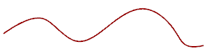

预计完成这堂课需要：3–5 分钟
简化 命令用于创建一个由最佳拟合直线和圆弧组成的线串。

在简化选中曲线之前，可以指定原始曲线在转换之后的状态。可以针对原始曲线选择以下选项之一：
保持
在创建直线和圆弧之后保留原始曲线。在选中曲线的上面创建曲线。
删除
简化之后移除选中曲线。移除选中曲线之后，不能再恢复。(如果选择“撤消”，可以恢复原始曲线但不再被简化。)
隐藏
创建简化曲线之后，将选中的原始曲线从屏幕上移除，但并未被删除。
简化样条后，使用距离公差将其近似为圆弧及直线。如果样条很长，近似于直线，并使用默认距离公差（0.01 英吋），则将使用半径超出最大部件尺寸限制 1000 x 1000 x 1000 米的大圆弧来近似计算样条。通过增加距离公差可避免该问题。
|
注释 |
使用编辑→显示和隐藏→显示命令来将隐藏曲线返回到屏幕中。 |